地政学
ホルムズ海峡に近い湾岸で、イラン、インド、東アフリカ、欧州、東アジアを結ぶ交易の中継点である。連邦内ではアブダビと役割を分け、政治の中心ではなく商業と接続性で存在感を保つ湾岸都市として読む視点だ。

🇦🇪 アラブ首長国連邦 / アジア / World City Atlas
湾岸の入江から空港、港湾、自由区、高層住宅、砂漠観光までを束ねる、交易と移住の都市。
都市の骨格
ドバイは石油都市というより、港、空港、自由区、観光、不動産、移民労働を組み合わせて成長した商業都市である。

ホルムズ海峡に近い湾岸で、イラン、インド、東アフリカ、欧州、東アジアを結ぶ交易の中継点である。連邦内ではアブダビと役割を分け、政治の中心ではなく商業と接続性で存在感を保つ湾岸都市として読む視点だ。
空港、港湾、自由区、金融、不動産、観光、展示会が成長を支え、建設、清掃、警備、家事、飲食を担う移民労働が日常を動かす。華やかな都市像は契約と送金の労働現場に深く依存する都市である重要な構造でもある。
イスラムを基盤に首長家の統治と部族的な記憶が残り、同時に南アジア、フィリピン、欧州、アラブ諸国の生活文化が交差する。礼拝、断食、家族、商取引の作法が多国籍都市の節度を形づくる街である日常空間なのだ。
高層住宅、モール、海岸、砂漠ツアー、旧スーク、人工島が観光の表情を作る一方、家賃、通勤、暑さ、労働者宿舎、社会管理が暮らしを左右する。便利さと格差が近距離で並ぶ都市として読む重要な視点なのである。
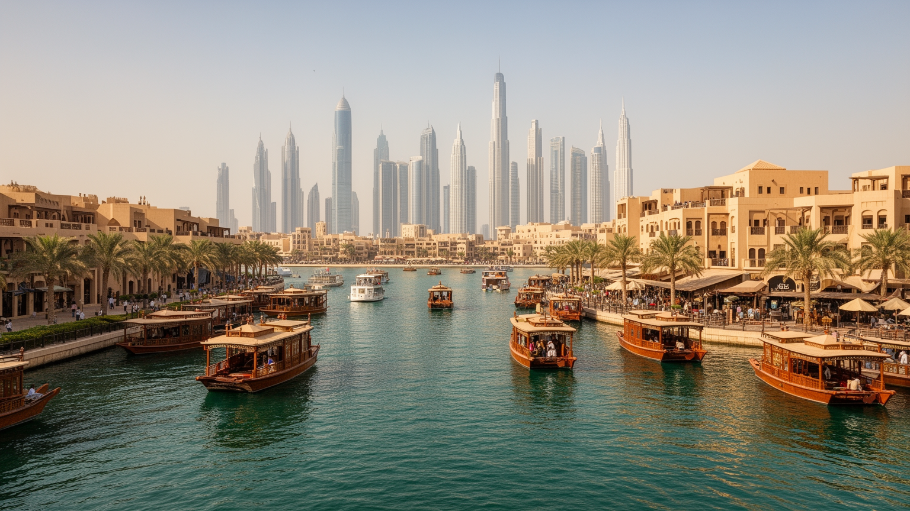
ドバイの都市史は、超高層ビルの足元よりも先に、ドバイ・クリークと呼ばれる入江の水際から始まる。浅い入江は真珠採り、漁業、木造船の交易、周辺砂漠の集落をつなぐ場所であり、ペルシャ湾を渡る商人や船員を受け入れた。地図上では小さな湾岸都市に見えても、インド洋、イラン南岸、オマーン、東アフリカ、南アジアとの往来が早くから日常に入り込んでいた。今日のドバイは巨大な空港や人工島で知られるが、交易都市としての性格は旧市街の水上タクシー、スーク、倉庫街、金や香辛料の商いにも残る。石油収入は成長の初期資金になったが、都市の軸は地下資源を掘ることより、物、人、資本、情報を通過させることに置かれてきた。クリーク周辺の古い街区と、シェイク・ザーイド・ロード沿いの高層帯をつなげて見ると、都市が水際の交易から航空と金融の結節点へ拡張した過程が見える。海は景観ではなく、移動、税制、外交、労働力の入口であり、ドバイの商業的な想像力を形づくってきた基盤である。入江をまたぐ橋や水上交通の距離感は、近代的な高速道路とは別の都市の縮尺を残している。古い商館、倉庫、船着き場の記憶をたどると、現在の自由区や空港経済も突然生まれたものではなく、境界を越える商いの習慣を制度化したものだと分かる。水際の古い距離感は、急成長した都市に人間的な尺度を残している。
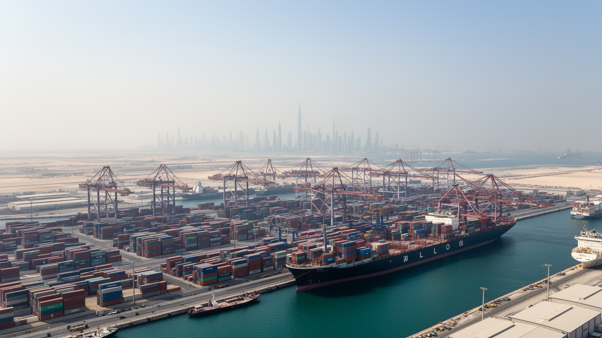
ジュベル・アリ港は、ドバイを湾岸の商業都市から世界の物流網に組み込む装置である。大型コンテナ船、倉庫、保税区、再輸出業、軽工業、船舶サービスが一体化し、湾岸諸国、南アジア、アフリカ、欧州へ向かう荷物がここで組み替えられる。港に隣接する自由区は、外資が拠点を置きやすい制度、税制、通関、労働力の組み合わせを提供し、単なる荷役の場所ではなく企業活動の舞台になった。ドバイの産業は製造業の厚みだけで測れず、在庫を短時間で動かし、法制度の違う地域をつなぎ、展示会や金融、保険、航空貨物と接続する能力に価値がある。港湾の効率は都市の華やかな観光地区からは見えにくいが、建材、食品、機械、車両、消費財が流れ込むことで不動産開発と日常生活を支える。一方で、物流都市は外部の景気、紛争、海上交通の緊張、燃料価格に強く左右される。港はドバイの安定した収益源であると同時に、世界経済の揺れを最初に受ける場所でもある。コンテナの背後には、通関書類を扱う事務職、倉庫で在庫を管理する労働者、船を動かす技術者、道路で貨物を運ぶ運転手がいる。自由区の利便性は企業を呼び込むが、都市が国境管理と開放性をどのように両立させるかという政治的な選択でもある。港の強さは大型施設だけでなく、遅れを許さない細かな手順に宿る。ここにも都市の実務力が表れる。
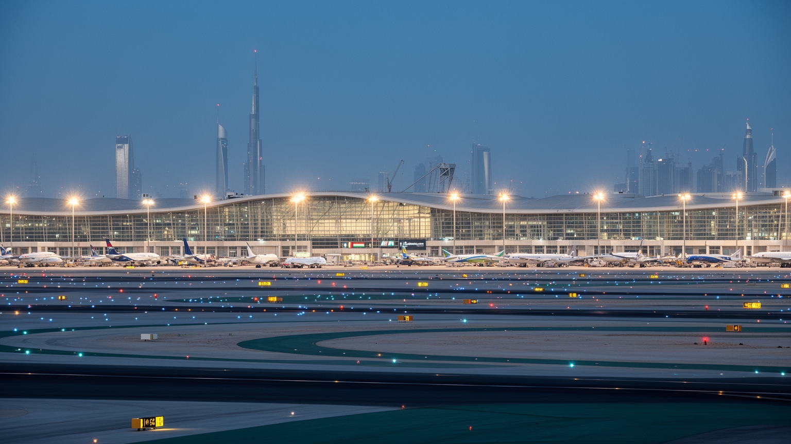
ドバイ国際空港と航空会社のネットワークは、都市の規模を越えた影響力を生み出している。欧州、アフリカ、南アジア、東南アジア、豪州を結ぶ中間地点にあり、乗継客、観光客、出張者、航空貨物が昼夜を問わず移動する。空港は滑走路だけではなく、ホテル、免税商業、整備、ケータリング、保安、物流、求人、観光宣伝が重なる巨大な都市装置である。航空の成功は、ドバイを目的地にするだけでなく、世界の移動時間を短く編集することで成り立つ。遠い市場同士を一泊以内で結べることは、展示会、金融、不動産販売、医療、教育、ホテル産業にも波及する。感染症流行や国際緊張のような危機では、乗客数の落ち込みが都市全体に伝わり、空港依存の強さが弱点にもなる。航空労働には高技能の操縦、整備、管制だけでなく、清掃、警備、荷役、接客、宿泊の多層の仕事がある。ドバイの空港を見ることは、都市が石油ではなく移動そのものを商品化し、世界の距離感を収益へ変えてきた仕組みを読むことでもある。空港周辺には貨物施設、ホテル、従業員住宅、道路網が広がり、深夜便のリズムが都市の労働時間を変える。乗継の便利さは、保安、清掃、案内、燃料補給、手荷物処理が途切れず動くことで初めて成立する。空港は都市の玄関であり、同時に休まない職場でもある。夜明け前の便も都市経済を動かす。
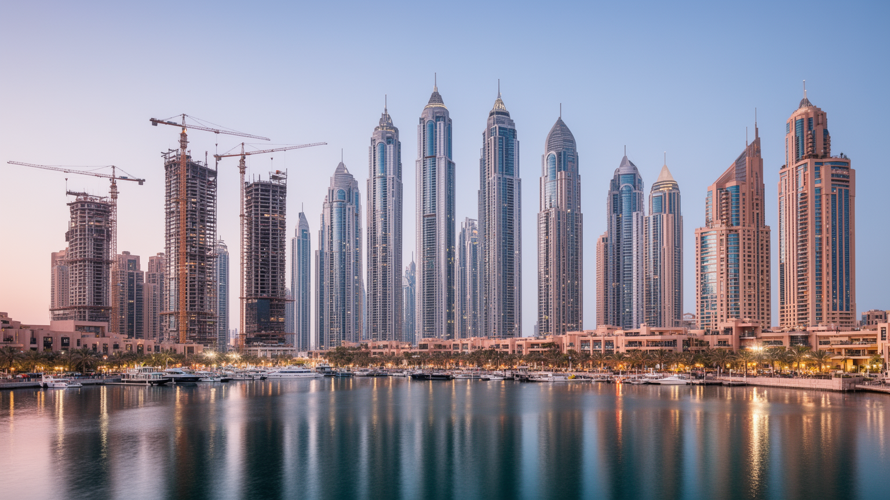
ドバイの高層景観は、国家の宣伝だけでなく、土地、信用、外国資本、移住者の期待が形になったものである。砂漠沿いの道路に沿って超高層ビルが並び、人工島、マリーナ、モール、ホテル、オフィス、分譲住宅が都市の象徴になった。不動産は観光と金融を引き寄せ、外国人が住み、働き、投資する入口になる一方、投機、過剰供給、債務、価格下落のリスクも抱える。ドバイは何度も市況の波を経験し、債務再編や周辺首長国との関係を通じて都市開発の速度を調整してきた。高層建築は成功物語を見せる強い装置だが、空室、管理費、労働者宿舎、郊外通勤、建設現場の安全を同時に考えなければ都市の実像はつかめない。住宅は資産であり、ホテルは観光商品であり、オフィスは国際企業の看板でもあるため、同じ建物が複数の経済を支える。華やかな外観の背後では、資本流入の規制、所有権、ビザ制度、家賃負担が生活を左右する。ドバイのスカイラインは未来志向の造形であると同時に、信用循環に支えられた脆い都市財政の表面でもある。投資用住戸が増えるほど、実際に暮らす人の近隣関係や学校、診療所、公共交通の整備が追いつくかも問われる。建物の完成速度は都市の勢いを示すが、長期的な維持管理、修繕、空調費、家賃上昇は住民の生活に残り続ける。眺望の価値は、日常の費用と切り離せない。
ドバイの人口の大部分は外国人であり、都市の日常は移民労働なしに成り立たない。南アジア、東南アジア、アフリカ、アラブ諸国、欧州から来た人びとが、建設、清掃、警備、家事、飲食、物流、ホテル、金融、医療、教育で働く。高所得の専門職と低賃金の現場労働者は同じ都市に暮らすが、住む場所、移動手段、休日の過ごし方、家族を呼べるかどうかは大きく異なる。雇用主や在留資格に依存しやすい制度は、労働者の交渉力を弱め、仲介料、賃金遅配、パスポート管理、労働時間、宿舎環境をめぐる問題を生みやすい。近年は改革も進むが、都市が安い労働力を前提に成長してきた構造は簡単には変わらない。送金は労働者の家族と故郷を支え、ドバイの建物は遠い村や都市の生活ともつながっている。観光客が見る清潔なモールやホテル、整った道路の背後には、暑さの中で働く人びとの身体がある。ドバイを理解するには、豪華な建築と同じ重さで、労働者の宿舎、バス移動、休日の集まり、契約の不安を地図に載せる必要がある。週末に公園や商店街へ集まる労働者の姿は、都市の中に小さな居場所を作る試みでもある。労働条件の改善は企業の評判だけでなく、湾岸都市が国際社会からどのように見られるかにも直結している。都市の速度は、移民の忍耐に支えられている。その現実を外すと、街の輪郭は読めない。
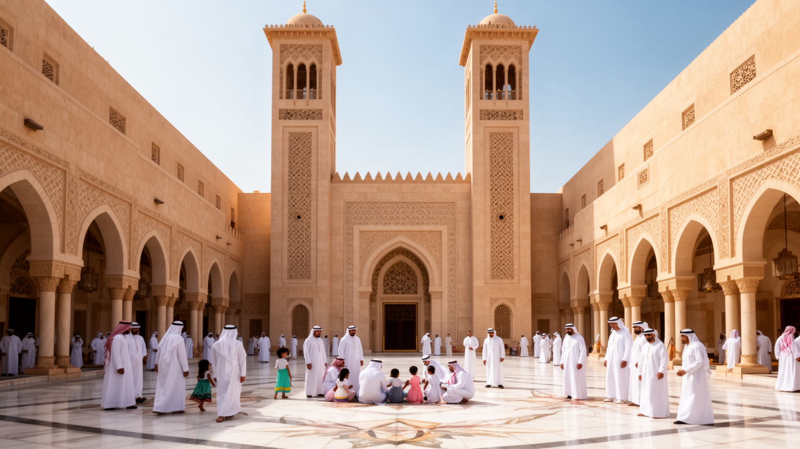
ドバイは国際都市である前に、アラブ首長国連邦の一首長国であり、イスラムを基盤とする社会である。首長家の統治、部族的なつながり、アラビア語、ラマダン、モスク、家族と名誉の感覚は、外国人が多数を占める街でも都市の規範を支えている。観光や商業の自由度は高いが、公共空間での振る舞い、宗教行事への配慮、飲酒、服装、政治的発言には独自の線引きがある。首長国民は数としては少数だが、公務、土地、国家企業、教育、文化政策を通じて都市の方向を決める立場にある。外国人居住者が作る多文化性は日常の活気を広げる一方、国民と非国民の権利の差、永住の難しさ、政治参加の限界をはっきりさせる。歴史的な家屋、鷹狩り、ダウ船、真珠採りの記憶は、単なる観光演出ではなく、急成長する都市が自分の起点を忘れないための文化資源でもある。イスラムは礼拝の時間だけでなく、商取引、慈善、食、祝祭、家族生活に入り込み、国際的な消費文化を抑制しながら形づくる。ドバイの開放性は、無制限の自由ではなく、首長国文化の枠内で慎重に設計された開放性である。金曜の礼拝、ラマダン中の営業時間、家族向け空間の設計は、国際的な商業都市にも宗教的な時間が流れていることを示す。外国人が多数派であっても、都市の礼儀と法制度は首長国の価値観を基準にしている。この基準を知ることが、街の寛容さと緊張を同時に理解する手がかりになる。
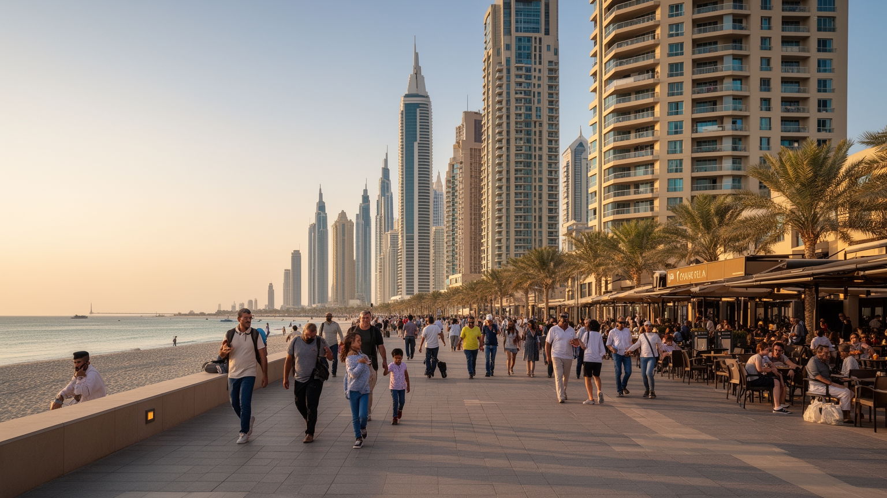
ドバイの街を歩くと、英語、アラビア語、ヒンディー語、ウルドゥー語、タガログ語、ロシア語、フランス語などが交差し、居住者の多くが一時的または長期の外国人として暮らしている。国際学校、私立病院、サービスアパートメント、ビザ付き雇用、送金店、各国料理、宗教施設が、多国籍な生活の基盤をつくる。高所得の駐在員は湾岸の安全、税制、空港接続、住宅設備を評価し、低賃金労働者は限られた休日と共有住宅、通勤バス、送金に生活を集中させる。市民権への道が狭いため、多くの人にとってドバイは永住する故郷というより、働き、稼ぎ、家族の将来へつなぐ場所である。多文化社会でありながら、政治的な共同体としての参加は限定され、都市への愛着と制度的な不安が同居する。外国人の多さは、飲食、音楽、スポーツ、教育、宗教行事に多様性を与えるが、社会階層ごとに生活圏が分かれやすい。ドバイの国際性は華やかな表面だけでなく、帰国、契約更新、子どもの進学、親の介護、為替、故郷への送金といった個人的な計算の積み重ねでできている。住宅地ごとに学校や商店、礼拝場所、休日の過ごし方が異なり、同じ都市に複数の生活時間が流れる。多国籍であることは交流の豊かさを生む一方、帰属の不確かさを抱えた生活でもある。都市への愛着は、永住権とは別の形で積み重なる。
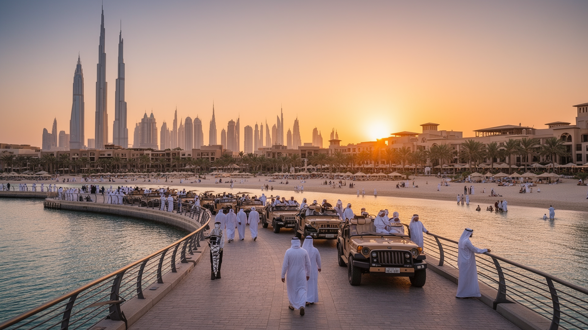
ドバイ観光は、超高層展望台、巨大モール、人工島、海岸リゾート、砂漠ツアー、国際イベント、レストラン、ホテルを組み合わせた都市演出で成り立つ。歴史的な遺産に頼るだけでなく、新しい景観を短期間で作り、それ自体を目的地にする力がある。高級消費は都市のブランドを強め、航空乗継を滞在へ変え、ホテル、タクシー、飲食、警備、清掃、イベント運営に幅広い雇用を生む。一方で、観光の輝きは所得格差、労働条件、環境負荷、過剰な空調、淡水消費、砂漠生態系への影響を隠しやすい。観光客にとってドバイは安全で便利で写真映えする都市だが、都市そのものが常に見られることを意識して整えられている。モールは買い物の場所であると同時に、酷暑を避ける公共空間の代替にもなる。旧市街やスークを巡る観光は、商業の起点を伝えるが、土産物化された表情も持つ。ドバイの観光を読むには、贅沢さを単純に批判するのではなく、それが航空、港湾、不動産、移民労働、国家ブランディングとどう結びつくかを見る必要がある。都市は砂漠の中に非日常を作り、その非日常を産業として管理している。豪華な滞在は富裕層だけでなく、中間層の短期旅行や乗継客にも広がり、価格帯の違うホテルや飲食店を生む。観光の幅が広がるほど、都市は誰に何を見せ、何を見せないのかを選び続ける街だ。
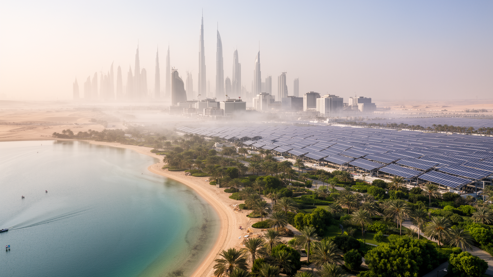
ドバイの都市生活は、水と冷房の管理によって成立している。夏の気温と湿度は屋外活動を厳しく制限し、建物、駅、車、モール、ホテル、労働者宿舎まで空調が不可欠になる。飲料水や都市の緑化、ホテルのプール、人工湖、洗浄、建設現場には大量の水が必要で、海水淡水化とエネルギー消費が都市の基盤を支える。湾岸の富は化石燃料経済と結びついてきたが、気候変動が暑熱、海面上昇、豪雨、砂嵐、電力需要を強めるほど、都市の維持費は増す。太陽光発電や効率化の取り組みは進むが、高級観光、不動産、航空、冷房都市という成長モデル自体が大きなエネルギーを必要とする。暑さは特に屋外労働者に重く、作業時間の制限や休憩、水分補給は人権と安全の問題になる。緑の街路や水辺の景観は快適さを演出する一方、砂漠環境では資源投入の結果でもある。ドバイの未来を考えるには、きらびやかな建築だけでなく、それを冷やし、洗い、照らし、移動させる水と電力の流れを読む必要がある。気候リスクは遠い課題ではなく、毎日の通勤、観光、建設、医療費にすでに入り込んでいる。海辺の埋立地や低い沿岸部は、高潮や海面上昇への備えも必要になる。冷房された室内と屋外労働の差は、気候リスクが社会階層によって異なる形で現れることを示している。快適さは技術で作られるが、その費用は都市全体で負担する。
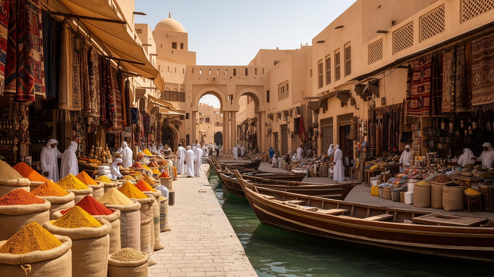
ドバイの旧スークは、都市の商業的な原型を今に伝える場所である。金、香辛料、織物、香料、家庭用品が並び、狭い通路では値段交渉、呼び込み、船で運ばれた商品、観光客の買い物が混ざる。整備された高級モールとは違い、スークには小規模商人、南アジア系の店員、イランやオマーンとの交易記憶、クリークを渡る水上交通が残る。もちろん観光地化は進み、商品や価格は訪問者向けに調整されるが、それでもドバイが最初から高層都市だったわけではないことを教えてくれる。旧市街の保存地区には風塔を備えた建築や中庭の生活の記憶があり、暑熱への伝統的な対応も見える。都市開発が未来の姿を強調するほど、古い商いの場所は、成長の起点と地域的なつながりを確認する役割を持つ。スークは単なる懐古ではなく、外国人労働者の商売、観光収入、宗教行事、日用品の買い物が続く生きた経済圏でもある。高層ホテルから旧市街へ移動すると、ドバイの時間は一つではないと分かる。都市は未来を売り物にしながら、入江と市場の記憶によって自分の物語を補強している。保存された街区では、観光客向けの展示と住民の用事が重なり、過去が完全な舞台装置になることを避けている。小さな店の交渉や船着き場の往来は、巨大開発とは別の速度で都市を動かす。古い市場は、都市の急成長を足元へ引き戻す役割を持つ。
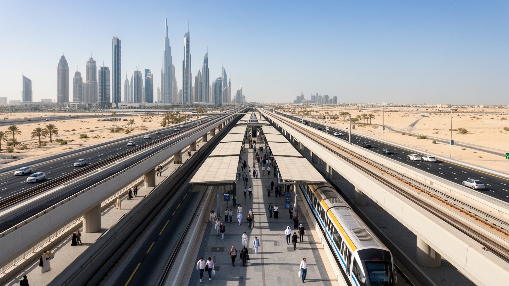
ドバイの都市空間は長い間、自動車と高速道路を前提に広がってきた。高層ビル、郊外住宅、モール、空港、港湾、労働者宿舎が広い範囲に散らばり、暑さもあって歩行者に厳しい場所が多い。メトロはこうした自動車依存を一部緩和し、空港、中心業務地区、マリーナ、旧市街、住宅地を結ぶ背骨になっている。高架を走る車窓からは、超高層ビルと空き地、建設現場、低層地区、倉庫、道路の広がりが同時に見える。鉄道は通勤者、観光客、サービス労働者を運び、運転免許や車を持たない人に都市へのアクセスを与えるが、駅から目的地までの距離や炎天下の歩行環境は課題である。バス、タクシー、配車アプリ、徒歩通路、屋内連絡をどう組み合わせるかが、生活の便利さを左右する。交通は単なる移動手段ではなく、誰が都市のどの場所へ無理なく到達できるかを決める社会インフラである。ドバイのメトロは未来的な都市イメージを演出する一方、分散した都市構造の不便さを補う実務的な装置でもある。駅前の開発が進むほど、車中心の街から少しずつ公共交通の街へ移る可能性が開く。公共交通の改善は、低所得の労働者や観光客の移動費を下げるだけでなく、渋滞と排出を抑える手段にもなる。歩道の日陰、駅前の横断、バスとの接続が整えば、都市の距離感はさらに変わる。移動の公平さは、都市の成熟度を測る物差しでもある。
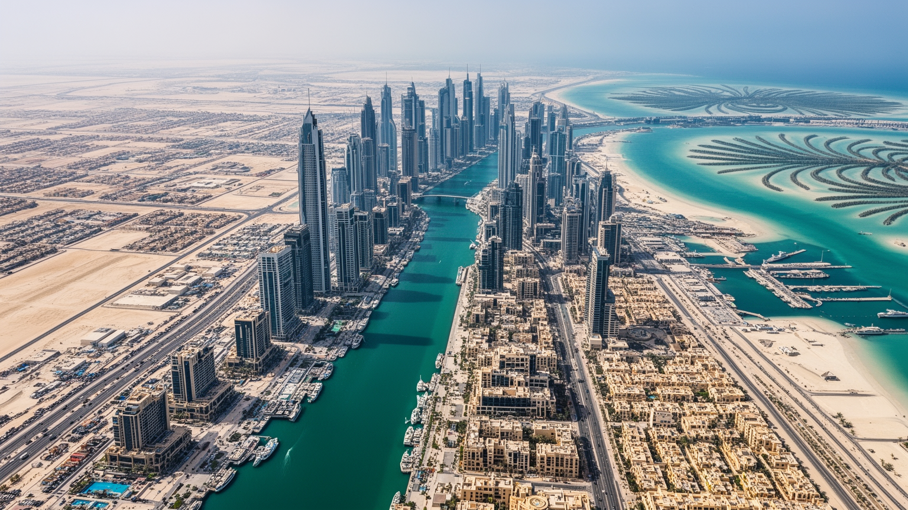
ドバイは、開放性と管理が同時に強い都市である。外国資本、観光客、専門職、労働者を大量に受け入れ、宗教や国籍の異なる人びとが働く余地を広げる一方、政治的な発言、労働運動、公共の抗議、報道、治安には明確な制約がある。安全で効率的な都市という評価は、厳しい規制、監視、行政手続き、ビザ制度、警察力、企業との近い関係によって支えられる。これは居住者に安心を与えるが、権利の差や異議申し立ての難しさも生む。都市の成功を高層建築や観光収入だけで測ると、国民と外国人、高所得層と低賃金労働者、中心部と宿舎、冷房空間と屋外労働の差が見えにくい。ドバイは湾岸の地政学、自由区の制度、港と空港、イスラム文化、移民労働、負債循環、気候リスクを一つの都市体験へまとめる力を持つ。だからこそ、便利で安全な表面を楽しむだけでなく、その便利さを誰が支え、どの制度が可能にし、どんな沈黙を必要としているのかを読むことが重要になる。ドバイは未来都市の模型ではなく、二十一世紀の移動、資本、労働、統治の矛盾が凝縮した湾岸都市である。魅力と問題を切り離さずに見ると、港湾、空港、モール、宿舎、モスク、スーク、砂漠が同じ都市の連続した要素として見えてくる。急速な成長は偶然ではなく、制度設計と労働力の流入を組み合わせた選択の結果である。読む視点を変えるほど、この都市の輪郭は立体的になる。